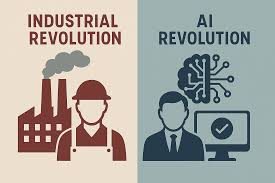

01 — The Spark
Some people think of the Industrial Revolution as the most rapid technological advancement in history — attributing the lightbulb, automobiles, and railways to that era's genius. But what if the growth of AI in just the last four years was more impactful than the entirety of that revolution?

02 — The Shift
My dad has been a software engineer for over 20 years. Whenever I glanced at his screen, I'd see thousands of lines of code. Last week at his office — not a single line of code. Just a Claude Code chat.
AI has overturned software and the internet. Five years ago, fewer than 5% of web content was AI-generated. Now in 2026, over 50% is.
03 — The Origin
AI was first conceived in 1956 by John McCarthy, who coined the term "Artificial Intelligence" and imagined a machine that could reason and act on its own. It evolved from rule-based logic to machine learning to the agentic systems we have today.
The pace accelerated so fast that AutoGPT gained over 100,000 GitHub stars in a single day — one of the fastest-growing open-source projects ever.
04 — My Story
My first encounter with modern AI was in 2023, in 7th grade ELA. A friend showed me ChatGPT. I asked it to write an essay on the Declaration of Independence — and was floored by the speed and quality.
That feeling kept returning: when Claude Code and Codex made coding a single sentence, when Atlas, Cowork, and Openclaw let AI browse the web for you. People started buying Mac minis as AI-powered mini employees — paid a fraction of a human salary but 1,000× more capable.
05 — The Future
The agentic AI sector is valued at $7 billion today. In nine years it's projected to surpass $140 billion. Imagine companies no longer hiring employees — just paying for AI bots that know everything and do it better than any human ever could.
Combined with advanced robotics, AI may eventually make all jobs obsolete.
"AI is the greatest technological advancement humanity will ever make — greater than the lightbulb, the automobile, the computer, even the wheel."
Its impact on the future of humanity is incomprehensible, and it might just never stop improving our lives for the rest of human existence.